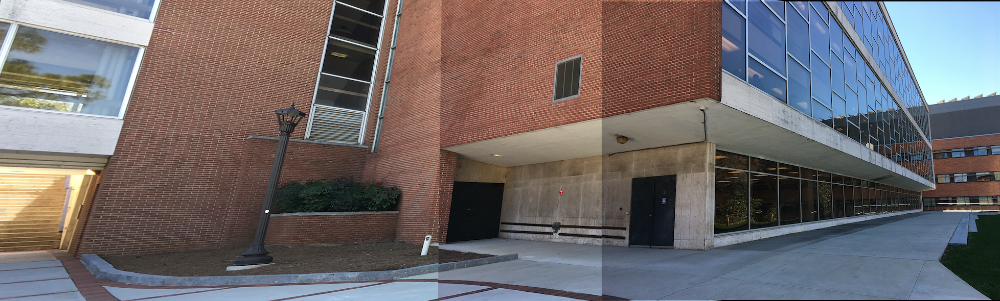

Panoramas

Concept:
These image-stitched panoramas were generated with image registration and alignment. The visual artifact at the seams between stitched images are the result of not using calibration and blending techniques after the image alignment transformations. Uncropped output panoramas expose the type of projective transformations used in image alignment.
Credits:
Photo site: Behind Georgia Tech Library, Atlanta, GA
Photo site: Train tracks near Suwanee Town Center, Suwanee, GA
OpenCV